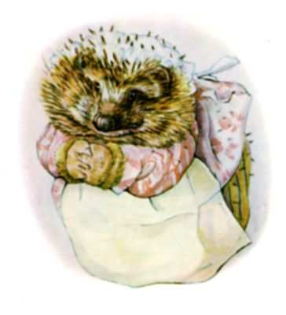
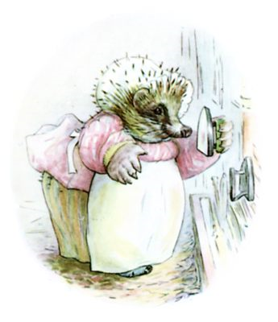
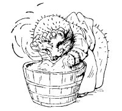
ニューランズにいる ほんものの リューシちゃんへ
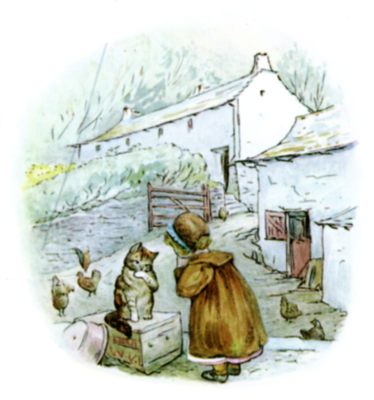
むかしむかし リューシという なまえの おんなのこが リトルタウンという まきばに すんでいました。 とっても いいこだったのですが ―― ただ ぽっけの ハンカチを いつも なくしてしまうのです。
あるひ リューシちゃんは うらにわへ なきながら やってきまして ―― まったく、 こんなふうに わめくのです！ 「あたしの ハンカチ なくなっちゃったあ！ ハンカチ ３まいと エプロン １まい！ ねえ、 あなた しらない、 とらぬこタビー？」
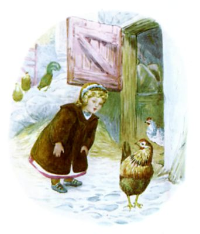
こねこは しろい あしを ぺろぺろするだけでした。 そこで リューシは ぶちのある めんどりに たずねます ―― 「へにぺにサリー、 ハンカチ ３まい みなかった？」 ところが ぶちの めんどりは こっこっと なきながら なやのなかへ かけこんで ―― 「なっる、 はだし、 はだし、 はだし！」
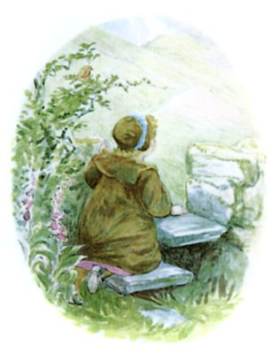
なので つぎに リューシは えだやどりしている こまどりコックンに ききました。
くろびかりする めで リューシを ちらりと みやる こまどりコックン、 けれども ふみこしだんの むこうへ とびさってしまいます。
リューシは ふみこしだんの うえに のぼって、 リトルタウンうらの おかに めを むけました ―― そのおかを みあげると うえのほうが くもに つっこんでいまして、 まるで てっぺんが ないみたいです！
ですから はるばる おかの なかほどまで すすんでいけば、 めのまえの くさちに しろいものが ひろがると おもったわけで。
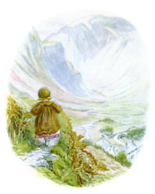
あしこしの つよい リューシは ぜんそくりょくで おかを かけあがりまして、 きゅうな さかみちを のぼりに のぼった ―― そのさきでは ―― リトルタウンも はるか したのほうに とおざかってしまって ―― ここから いしを なげれば えんとつに あてられそうなくらい！
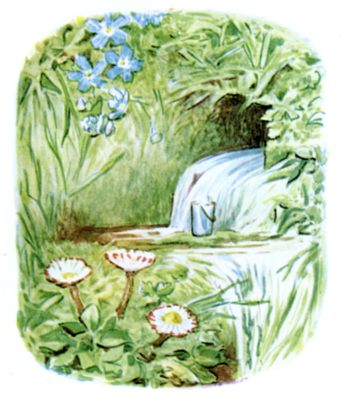
するうち たどりついたのが、 おかの なかほど わきだす いずみ。
だれかが みずを くもうとしたのか、 いしのうえに ブリキの バケツが おかれてありましたが ―― みずは どばどば あふれっぱなしで、 それというのも おおきさが ゆでたまごたてくらいしか なくって！ それから みちの ぬかるみに ―― こびとみたいな あしあとが ありまして。
リューシは かけあしで たどっていきます。
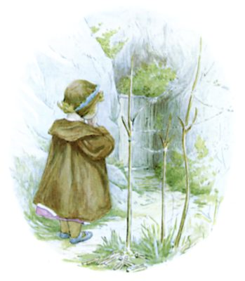
みちは おおきな いわの もとで おわっていました。 みじかく みどりの くさが はえていて、 そこに わらびの くきを きってこしらえた さきわれの ものほしばしら、 あと いぐさで あまれた ものほしざおに ちいさな せんたくばさみの やま ―― でも ハンカチは なくって！
ところが ほかにもまだ ありまして ―― ドアなのです！ おかのなかへ つづいていて、 うちがわから だれかの うたごえが ――
「ゆりのように しろく きよらか、 ん！
ちいさな フリルを かさねて、 ん！
しわなし ほかほか ―― しみなんて
ちっとも ありゃしないって、 ん！」
ちいさな フリルを かさねて、 ん！
しわなし ほかほか ―― しみなんて
ちっとも ありゃしないって、 ん！」
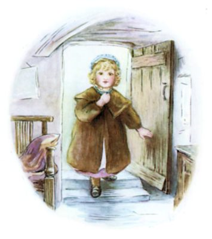
リューシが こん、 こんこん、 と とを たたくと うたも やみまして。 こごえで ふるふる かえってきます。「どなた？」
ドアを あける リューシ。 おかのなかに なにが あったと おもいます？ ―― ととのった すてきな だいどころに、 いしじきの ゆか、 きの はり ―― まきばで みる だいどころと まったくおなじで。 ただ てんじょうが ひくくて リューシの あたま すれすれで、 つぼや おなべも ちいさくて、 そこにある なにもかもが そうなのです。
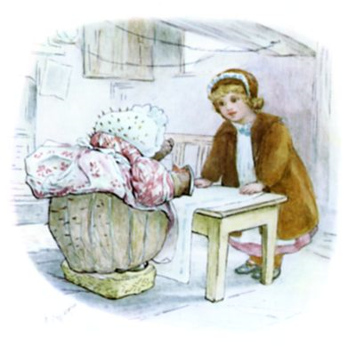
はいると、 ほかほかした すてきな におい。 だいのところで アイロンを てに たっていたのが、 でっぷりした ちいさな ひとで、 ふあんげに リューシを みつめていて。
そのひとは がらものの うわぎを すそで まくりあげ、 しましまの スカートのうえに おおきな エプロンを かけていました。 ちいさい くろっぱなを すんすんすん、 めを ぱちぱちぱち。 それから ぼうしのしたに ―― リューシなら きいろい まきげが あるところに ―― そのひと、 と・げ・と・げが あったんです！
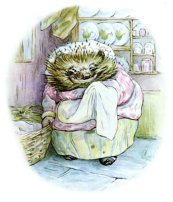
「どちらさま？」と きくのは リューシ。「あたしの ハンカチ しらない？」
そのひとは かるく おじぎをして ――「あら、 ええ、 ごめんなさい。 あたしゃ チギウィンクルおばさん。 あらあら ええ ごめんなさい、 あたしゃ うでききの クリーニングやなのよ！」と、 ふくの はいった かごから なにかを とりだし、 アイロンだいの うえで ひろげだします。
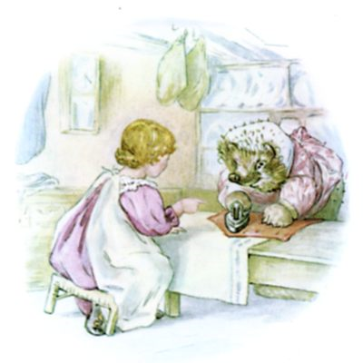
「それ なあに？」と リューシは いって ――「あたしの ハンカチじゃない？」
「いんや、 ごめんなさいね。 こりゃ こまどりコックンの えんじの チョッキさ！」
と、 アイロンがけして おりたたみ、 わきに よせます。
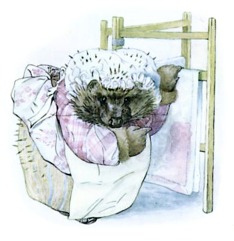
そのあとまた なにかを ものほしかけから とって ――
「あたしの エプロンじゃない？」と リューシ。
「いんや、 ごめんなさいね。 こりゃ みそさざジェニーの もんいり テーブルかけさ。 見とくれよ、 アカスグリの おさけで こんなに しみが！ あらうだけでも なんぎでね！」と チギウィンクルおばさん。
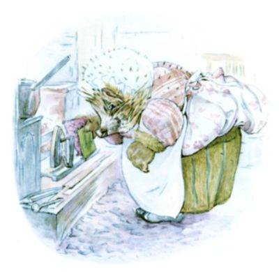
チギウィンクルおばさんは、 はなを すんすんすん、 めを ぱちぱちぱち。 それから だんろから べつの アイロンを とってきまして。
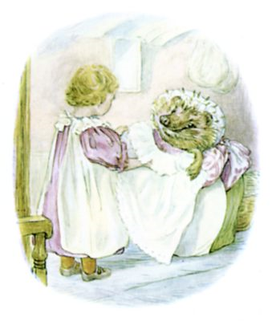
「あたしの ハンカチが １まい ある！」と こえを はりあげる リューシ ――「あたしの エプロンも！」
チギウィンクルおばさんは アイロンを かけて ひだを つけて、 ふるって フリルを ひろげます。
「あっ、 すてき！」と リューシ。
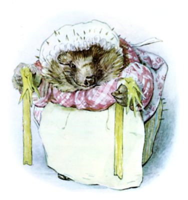
「あと、 これ なあに？ てぶくろみたい なかゆびつきの きいろくて ながいの。」
「ああ、 こりゃ へにぺにサリーの ストッキングだね ―― ほれ にわで ひっかくから、 かかとが こんなに すりきれてさ！ んも、 すぐにでも はだしに なるっての！」と チギウィンクルおばさん。
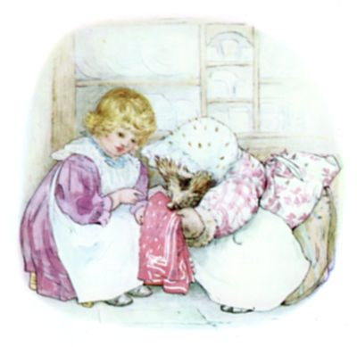
「あっ、 もう１まい ハンカチ ―― でも あたしんじゃない。 まっか？」
「ええ ええ ごめんなさいね。 こりゃ あなうさママさんの もの。 たまねぎの においが きつくてね！ これだけ わけて あらわにゃね。 どうやっても においが とれなくってさ。」
「あたしの もう１まい あった。」と リューシ。
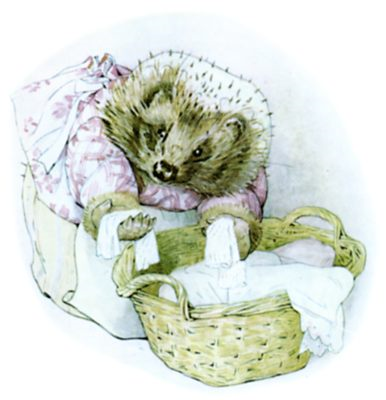
「その まっしろの へんなの なあに？」
「こりゃ とらぬこタビーの てぶくろさ。 あとは アイロン かけるだけ。 あのこは じぶんで あらうからねえ。」
「あった、 さいごの １まい！」と リューシ。
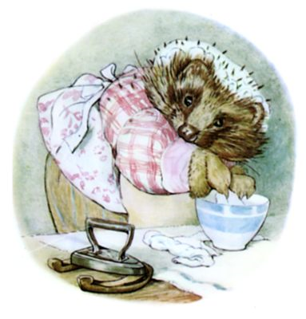
「その のりのなかに ひたしてるの なあに？」
「こりゃ しずからトムの シャツの えりさ ―― ひどく とくべつでね！」と チギウィンクルおばさん。「さあて アイロンがけも おしまい。 ふくを ほしに いかなきゃ。」
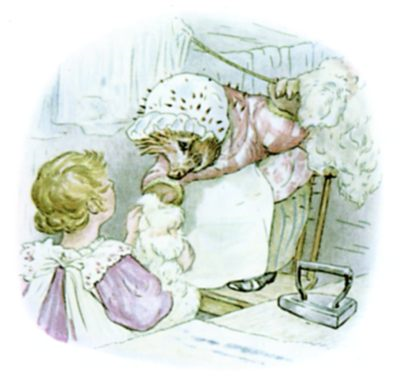
「その かわいらしい ふかふかふわふわは なあに？」と リューシ。
「まあ、 こりゃ スケルだにの こひつじちゃんたちの けいとの うわぎだね。」
「あれ、 うわぎって。 ぬげるの？」
「そうさね、 ごめんなさいね、 ほれ かたの ひつじじるしを ごらん。 こっちが ゲイツガースの ぶんで、 このみっつが リトルタウンからのだね。 いつも あらうときに しるしを つけとくんだよ！」と チギウィンクルおばさん。
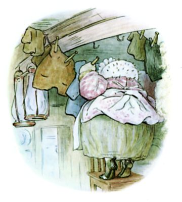
かたち おおきさ さまざまの ふくが みんな つるされていきます ―― ねずみの ちゃいろい コートが たくさんに、 もぐらの くろい あやおりチョッキ １まい、 きたりすナトキンの しっぽのない あかい えんびふく、 あなうさピーターの ちっちゃく ちぢんだ あかい うわぎ、 あと あらってるうちに しるしの とれてしまった スカート ―― するうち、 とうとう かごは からに！
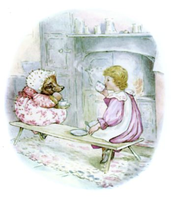
それから チギウィンクルおばさんは おちゃを いれまして ―― じぶんのと、 リューシのを。 ふたりは だんろまえの ながいすに こしかけ、 おたがい よこめを むけあって。 チギウィンクルおばさんの ティーカップを もつ ては、 それはもう まっちゃっちゃ、 せっけんの あわで しわっしわで。 それに うわぎや ずきんの あちこちから とげとげの けさきが なかから そとへ つきでていました。 なので リューシは あんまり ちかくに すわらないようにして。
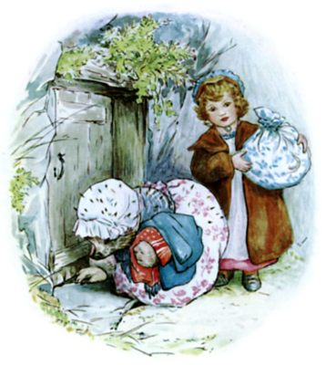
おちゃが おわると ふたりは せんたくものを つつみに まとめました。 リューシは ハンカチを きれいになった じぶんの エプロンのなかに おりたたんで、 ぎんいろの あんぜんピンで とめます。
そのあと どろのすみで だんろを もえあがらせて、 そとへ でると とじまりして かぎを しきいの したに かくしました。
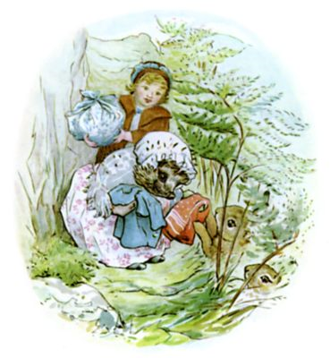
そして おかを とことこ おりていく リューシと チギウィンクルおばさん。 つつみを ふたつ かかえて！
みちを ながなが くだっているあいだ いろんな どうぶつたちが かおを あわせようと しげみから でてきます。 はじめに であったのは あなうさピーターと ばにばにベンジャミン！
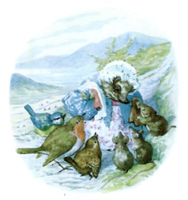
おばさんは きれいになった ふくを ふたりに わたしました。 このあたりの ちいさな どうぶつ・ことりたちは みんな チギウィンクルおばさんの おせわに なっているのです。
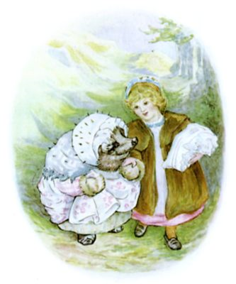
というわけで おかの ふもと、 ふみこしだんに たどりつくころには はこぶものも リューシのぶんしか のこっていません。
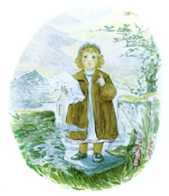
リューシは つつみを てに ふみこみだんを かけあがって、 それから ふりかえって 「さよなら」って そのせんたくおばさんに ありがとうと いったのですが ―― おっかしなことに！ チギウィンクルおばさんは ありがとうも クリーニングの おだいも またずに いっちゃって！
おばさんは もう おかを ぐんぐん かけあがっていたのです ―― おばさんの しろい フリルの ずきんは どこに？ かたかけは？ うわぎは？ ―― スカートは？
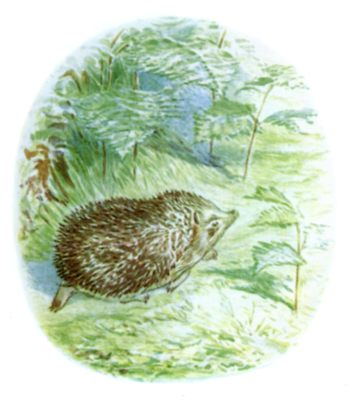
ほんとに ちっちゃくなっちゃって ―― まっちゃっちゃで ―― とげだらけ！
そう！ チギウィンクルおばさんは ただの はりねずみなのでした！
＊ ＊ ＊ ＊
（さて リューシちゃんが ふみこしだんのところで うとうと ゆめを みたのだという ひとも ありますが ―― それなら どうして ハンカチ３まいと エプロン１まいが あんぜんピンで まとめられてあるのでしょう？それに ―― わ・た・し、 キャット・ベルという おかの うらに ドアを みたこと あるんですよ ―― しかも わ・た・し、 チギウィンクルおばさんとは だいの なかよしなんですよ！）
（おしまい）